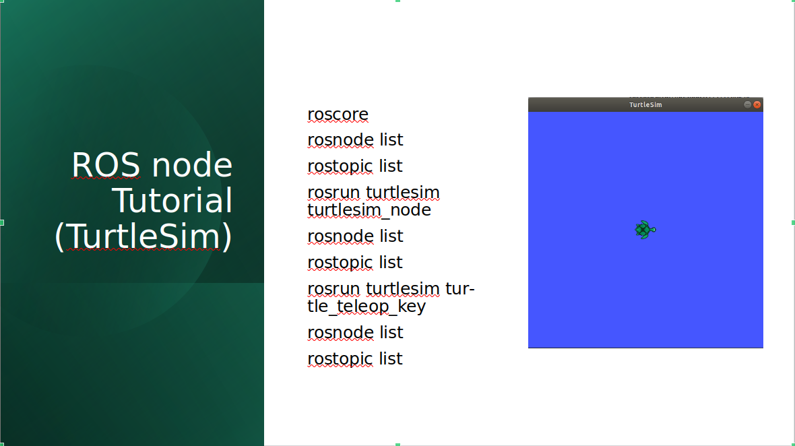
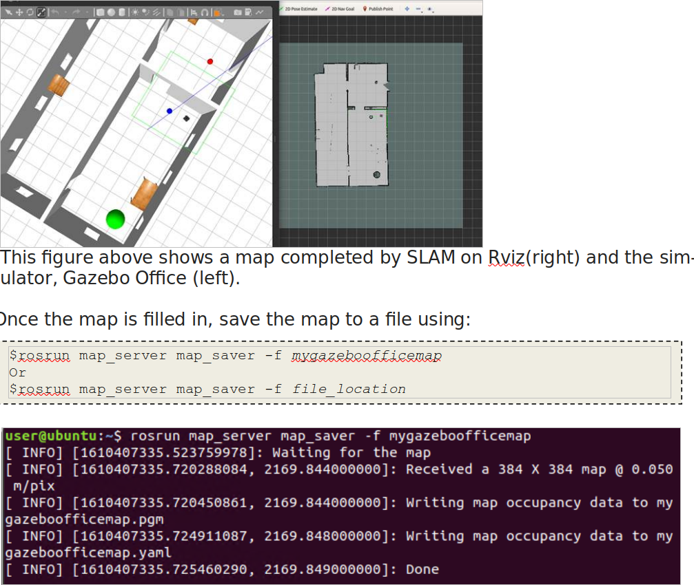
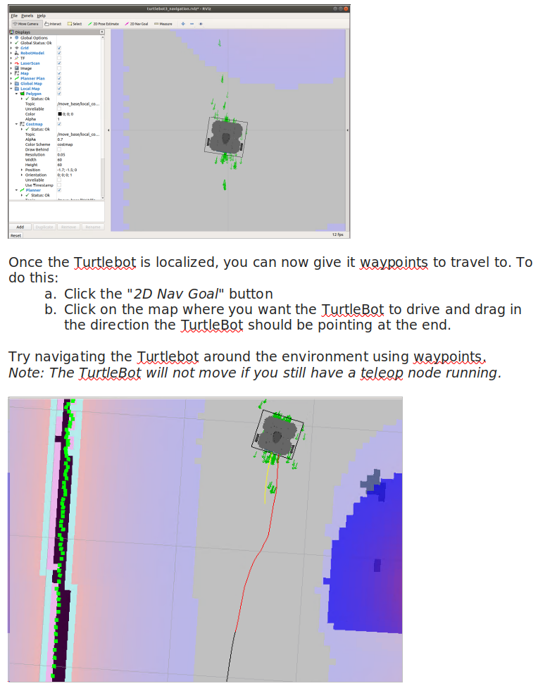

Development, validation, and live delivery of a virtual mobile-robotics laboratory introducing ROS fundamentals, TurtleBot simulation, sensor visualization, SLAM, localization, and autonomous navigation.
Lab 1 introduced students to the ROS software ecosystem and progressively connected fundamental concepts to a simulated TurtleBot mobile-robot system.
The laboratory material was redesigned so students could develop practical ROS skills using a virtual TurtleBot environment rather than relying exclusively on access to physical laboratory hardware.
The work combined a detailed student-facing lab manual with a separate live instructional session in which students were guided through ROS concepts, commands, simulation, mapping, localization, and navigation.
The live session complemented the written manual with guided exercises intended to make ROS communication concepts visible through direct experimentation.

The lab first established the ROS execution and communication model before introducing the complete mobile-robot simulation.
Students used Turtlesim to observe how active nodes and topics changed as processes were launched, allowing the publisher–subscriber model to be connected to behavior they could immediately see.
Students moved from Turtlesim to a simulated TurtleBot3 Waffle operating inside the Gazebo Office environment.
Keyboard teleoperation was used to establish the connection between ROS commands and physical-style mobile-robot motion.
Students directly published
geometry_msgs/Twist messages to
/cmd_vel and observed the resulting
linear and angular motion.
RViz was used to visualize laser scans, camera data, coordinate frames, and other topics generated by the simulated robot.
Students were introduced to the command-line and GUI tools required to inspect communication, record data, and understand the active ROS computation graph.
Students then used Gmapping with the simulated TurtleBot to construct an occupancy map of the Gazebo Office environment.
The TurtleBot was manually driven through the environment while RViz displayed the map being built from range observations.
Once sufficient coverage was obtained, the resulting occupancy map was saved and reused in the subsequent localization and navigation exercise.

The final stage connected the previously generated map to AMCL localization and the ROS navigation stack.
Students provided an initial pose estimate in RViz, observed the AMCL particle distribution converge, and compared the laser observations with the stored map.
Once localization was established, navigation goals were assigned through RViz and the TurtleBot autonomously planned and executed paths through the environment.

The written manual provided a reproducible reference, while the live session focused on guided experimentation, observation, questions, and troubleshooting.
Rather than only demonstrating completed results, students were encouraged to run commands themselves, inspect the changing ROS system state, diagnose problems, and connect observed behavior to the underlying concepts.
I developed and revised the laboratory material, verified the complete virtual robotics workflow, prepared the live instructional content, guided students through the exercises, and provided troubleshooting support during laboratory sessions.
The objective was not only to make the software run, but to ensure that students could understand the ROS architecture underlying the simulated robot behavior.
Lab 2 expanded the localization component into a dedicated AMCL experiment examining particle-filter behavior and parameter sensitivity.
Particle-filter localization, sensor and motion models, measurement uncertainty, particle count, pose error, covariance, and computation-time analysis.